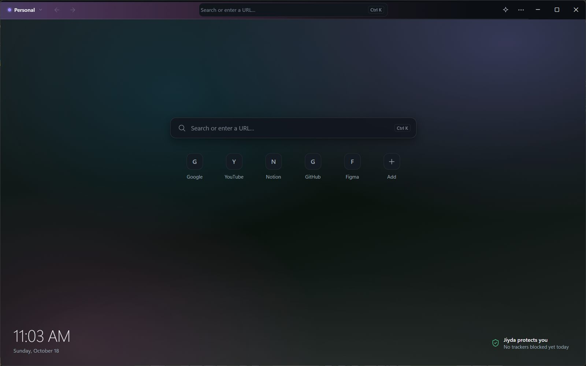

A calmer way to browse.
Jiyda is a quiet browser for Windows. Private by default, designed for focus, and out of your way when you just want to read.

Less browser, more web.
No tab strip shouting for attention. Pages, contexts and tools appear when you call them and step aside when you don’t.
Spaces
Separate contexts for work, study and home. Each Space keeps its own pages and its own cookies and logins.
Orbit
All your open pages, grouped by what they are about. Find a page in a second instead of hunting through tabs.
Later
Put a page aside without closing it. Clear your head now, come back when you are ready.
Split View
Two pages side by side in one window: read and write, compare, take notes.
Command palette
Ctrl+K opens pages, history, bookmarks and every command from one search field.
Protection built in
Known trackers and ads are blocked out of the box. Sites ask before using your camera, microphone or location.
Move in a minute
Bring your bookmarks and history from Chrome or Edge. Nothing is removed from the other browser.
Undo instead of “Are you sure?”
Closed a page or removed a bookmark by mistake? Press Undo. And after a crash your pages are still there.
Your browsing stays yours.
Jiyda has no account, no ads and no analytics. Your history, bookmarks and open pages are stored on your computer and nowhere else.
Jiyda does not collect
- the pages you visit or your history
- what you search for or type
- page contents, cookies or passwords
- usage statistics or crash reports
Jiyda connects only to
- the websites you open and your search engine
- GitHub, to check for and download updates (you can turn this off)
- Anthropic, only if you set up Ask Jiyda with your own key
Jiyda shows pages with Microsoft WebView2, the same engine Microsoft Edge uses. Read the privacy policy for what that means.
Made in Uzbekistan.
Jiyda is made in Uzbekistan and speaks Uzbek, Russian and English. It is free, and early: we are looking for the first people to try it and tell us what to fix.
Download Jiyda for Windows